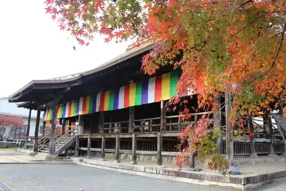
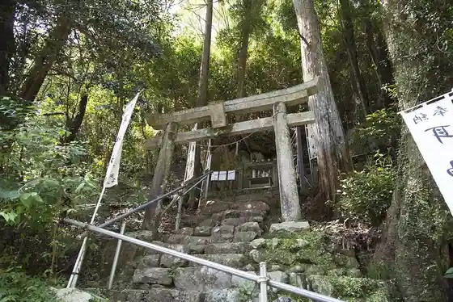
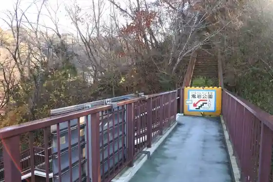
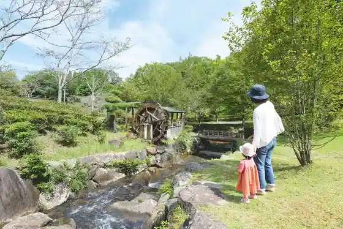

Otera Yama Gan Kyo Tera
Mitake, Gifu · 0574-67-0386 · Official / source link

Mimi Shrine
Mitake, Gifu · 0574-67-2111 · Official / source link

Oni no Itto Iwa Renge Iwa
Mitake, Gifu · 0574-67-0285 · Official / source link

Rifuresshu Kukan !! (Mitake Forest)
Mitake, Gifu · 0574-67-2111 · Official / source link

Taichi Yama Gu Kei Zendera
Mitake, Gifu · 0574-67-0123 · Official / source link
Kanko Omotenashi Shisetsu (Ontake Yado Waiwai Kan)
Mitake, Gifu · 0574-42-8580 · Official / source link
Kirei Nao Sushi Tsukurimasenka ? Mitake Hana Zushi Experience
Mitake, Gifu · 080-3670-4552 · Official / source link
Nakasendo Fushimi Yado
Mitake, Gifu · 090-7918-3133 · Official / source link
Ontake Yado Honjin
Mitake, Gifu · 0574-67-2111 · Official / source link
Nanzan Park
Mitake, Gifu · 0574-67-5196 · Official / source link
Yotteryamitake
Mitake, Gifu · 0574-67-1112 · Official / source link
Nakasendo Mitake Kan
Mitake, Gifu · 0574-67-7500 · Official / source link
Oni no Kubizuka
Mitake, Gifu · 0574-67-2111 · Official / source link
Nakasendo Ontake Yado Shoka Takeya
Mitake, Gifu · 0574-67-7500 · Official / source link
Utai Saka Ishidatami
Mitake, Gifu · Official / source link
Kao Ko Joshi
Mitake, Gifu · 0574-67-2111 · Official / source link
Mitake Joshi
Mitake, Gifu · 0574-67-2111 · Official / source link
Fushimi Yado Honjin Ato Hi
Mitake, Gifu · 0574-67-2111 · Official / source link
Izumi Shikibu Byosho
Mitake, Gifu · 0574-67-2111 · Official / source link
Ue Megumi Tsuchi Joshi
Mitake, Gifu · 0574-67-2111 · Official / source link
Yamauchi Kasuke Yashikiato
Mitake, Gifu · 0574-67-2111 · Official / source link
Kohara Joshi
Mitake, Gifu · 0574-67-2111 · Official / source link
Sho Yuki Ki Toge Lookout
Mitake, Gifu · 0574-67-2111 · Official / source link
Ushi no Hana Kake Saka
Mitake, Gifu · 0574-67-2111 · Official / source link
Mitake Forest Cherry Blossoms
Mitake, Gifu · 0574-67-2111 · Official / source link
Ju Motoki Tachiba
Mitake, Gifu · 0574-67-2111 · Official / source link
Utai Saka Ichiri Tsuka
Mitake, Gifu · 0574-67-2111 · Official / source link